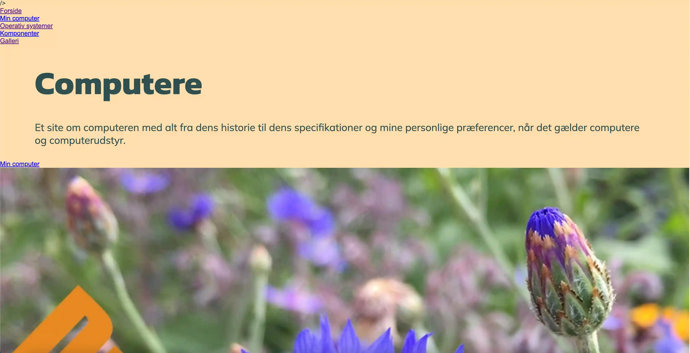
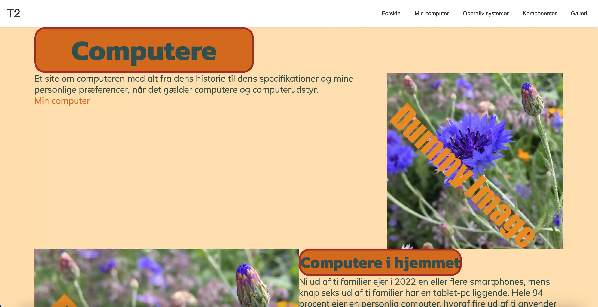

TEMA 2
MOBILSITE
MOBILSITE
I tema 2 har vi fået en grundlæggende introduktion til webudvikling, herunder HTML og CSS.
Vi har desuden lært om moodboards og styletiles, da disse er nyttige værktøjer til at bygge
en hjemmeside.
Vi har også undersøgt emner som ophavsret, stilarter, favicon og designprincipper.
Derudover har vi fået indsigt i, hvordan man arbejder med farver, typografi og marginer i CSS.
For at få en solid forståelse af de grundlæggende elementer skulle vi opbygge en
mobilvenlig hjemmeside, der demonstrerede vores forståelse af webudviklingens fundamentale aspekter.
Klik på billedet for at få adgang til projektet!
WEBSITE
WEBSITE
Længere inde i tema 2’s indlæring af webudviklingens grundlæggende principper, skulle vi lave en studiestartsprøve.
Denne opgave gik ud på at udvikle en mobilvenlig hjemmeside, som skulle kunne tilpasses både mobil- og desktop-format.
Dette blev bl.a. muligt ved at implementere grids og media queries.
Tema 2 har dermed givet os en solid grundforståelse, som er vigtig for vores fremtidige arbejde som multimediedesignere.
Klik på billedet for at få adgang til projektet!